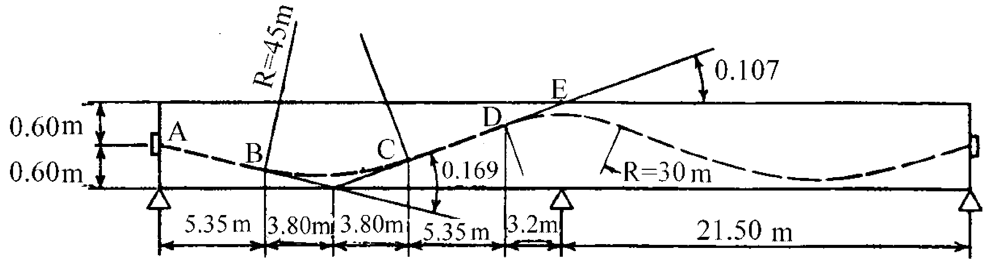
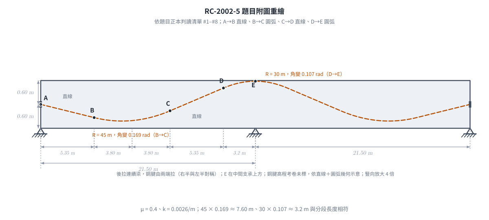
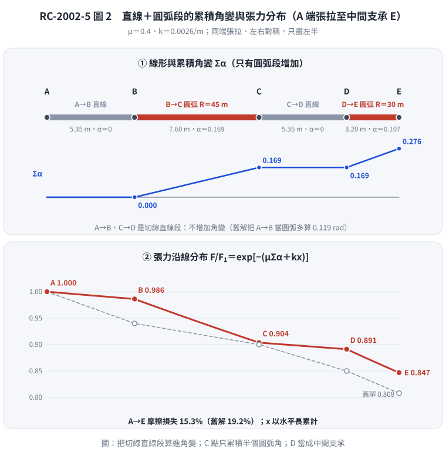

📄 題目正本：考卷原文・附圖・判讀清單（已確認）
RC-2002-5 題目正本
本檔只記錄考卷上寫了什麼、圖上畫了什麼，不含任何解法。解析見同資料夾
RC-2002-5.md。
判讀清單已經確認（凍結）；本檔原則上不再修改（改動須回考卷原圖並記 log）。
| 項目 | 內容 |
|---|---|
| 考卷 | raw/exams/RC-2002_鋼筋混凝土設計與預力.pdf 第 2 頁（背面），第五題 |
| 考年 | 民國 91 年（2002） |
| 配分 | 30 分 |
| 附圖 | RC-2002-5-fig-2.png（2026-11-15 由考卷 500 dpi 重新擷取）；RC-2002-5-fig-1.png（舊證據圖，左上角空白處有滑鼠游標，保留不刪） |
| 判讀狀態 | 已確認（2026-11-15 使用者授權依 Claude 建議確認；轉錄 2026-11-15；PyMuPDF 110 dpi 全頁＋500 dpi 附圖（考卷內嵌點陣圖）目視、文字層逐字核對；盲讀後才比對既有解析） |
1. 考卷原文（逐字）
五、有一後拉法預力混凝土連續梁，如圖，彎曲鋼腱係由兩端拉線，鋼索與套管間之摩擦係數 μ＝0.4，長度方向皺摺摩擦係數 k=0.0026/m。
試計算 AE 兩點間，由摩擦所致的預力損失百分率。假設 A 點應力為 $F_1$，則 B、C、D、E 各點之應力為何？（30 分）
2. 考卷給的公式、附表與參數
- 後拉法連續梁，鋼腱由兩端張拉。
- 摩擦係數 $\mu=0.4$；皺摺（擺動）摩擦係數 $k=0.0026$/m。
- 附圖幾何（照錄）：梁深 0.60 m＋0.60 m；水平分段 5.35 m｜3.80 m｜3.80 m｜5.35 m｜3.2 m（A 至中間支承），右跨 21.50 m；圓弧半徑 R＝45 m、R＝30 m；角度 0.169、0.107。
- 考卷未印摩擦損失公式。
- 沒有給：鋼腱高程（各點距梁底）、鋼腱實際曲線長度（只有水平分段）、張拉力數值（以 $F_1$ 表示）。
- 卷首注意事項：可以使用電子計算器，使用電子計算器計算之試題，需詳列解答過程。不必抄題，作答時請將試題題號及答案依照順序寫在試卷上，於本試題上作答者，不予計分。（未指定規範版本。）
3. 附圖

圖面文字照錄：0.60m、0.60m、A、B、C、D、E、R=45m、R=30 m、0.169、0.107、5.35 m、3.80m、3.80m、5.35 m、3.2m、21.50 m。
4. 判讀清單
| # | 項目 | 判讀 | 圖上／題文依據 | 把握 |
|---|---|---|---|---|
| 1 | 梁與支承 | 兩跨連續梁，每跨 21.50 m（左跨 5.35＋3.80＋3.80＋5.35＋3.2＝21.50）；左端、中間、右端各一支承 | 附圖尺寸鏈與三角形支承 | 確定 |
| 2 | 錨碇 | A 在左端，位於梁深中央（0.60＋0.60 m）；右端對稱錨碇；鋼腱由兩端張拉，A→E 為半條鋼腱 | 附圖；題文「由兩端拉線」 | 確定 |
| 3 | A→B | 直線段，水平長 5.35 m（角變 0）；B 為直線與 R＝45 m 圓弧的切點（B 處畫有半徑線） | 附圖：AB 虛線為直線，延長線穿過梁底；R=45m 的半徑線止於 B | 確定 |
| 4 | B→C | R＝45 m 圓弧，水平長 3.80＋3.80＝7.60 m，角變 0.169 rad（AB 延長線與 CD 線的夾角）；45×0.169＝7.6 與分段長度相符 | 附圖 0.169 標在 AB 延長線與 CD 線之間；C 處亦有半徑線 | 確定 |
| 5 | C→D | 直線段，水平長 5.35 m（角變 0）；D 為直線與 R＝30 m 圓弧的切點（D 處畫有半徑線） | 附圖 | 確定 |
| 6 | D→E | R＝30 m 圓弧，水平長 3.2 m，角變 0.107 rad（CD 切線與水平的夾角；E 為中間支承正上方的鋼腱頂點，切線水平）；30×0.107＝3.21 與 3.2 m 相符 | 附圖：0.107 標在 CD 延長線與梁頂水平線之間；E 落在中間支承正上方；R=30m 標於支承上方反曲段 | 確定（解讀；2026-11-15 使用者授權依 Claude 建議確認） |
| 7 | A→E 總角變 | 0＋0.169＋0＋0.107＝0.276 rad（只有兩段圓弧有角變） | #3–#6 | 確定 |
| 8 | 長度 | 皺摺摩擦長度以水平投影代替曲線長（考卷只給水平分段，差異可忽略），須明寫 | 附圖只標水平尺寸 | 確定（解讀） |
| 9 | 「應力」與 $F_1$ | 題文寫「A 點應力為 $F_1$」，各點以 $F_1$ 的倍數表示即可（力或應力皆同比例） | 題文 | 確定（解讀） |
| 10 | 考卷沒有給 | 鋼腱高程、曲線實長、張拉值 | 全題 | 確定 |
轉錄：2026-11-15（RC-U4-2+U4-3+U4-4 題目正本推廣・批 1）
確認：2026-11-15 使用者授權依 Claude 建議確認（RC-U4-2+U4-3+U4-4 題目正本推廣・批 1，關卡一）
考題編號：RC-2002-5
主分類： RC-U4-3 預力損失
副分類： 無
設計法： WSD 工作應力法
標籤： 後拉法 摩擦損失 連續梁 兩端張拉 μ=0.4 k=0.0026 A-E各點 角變量累積
1. 題目（考卷原文見題目正本）
考卷原文、公式／附表、附圖與判讀清單（已確認）見
RC-2002-5-problem.md。本節只列解題時最容易讀錯的地方與本解使用的記號；題意以題目正本為準。

重繪自考卷附圖，依題目正本判讀清單 #1–#7。本圖攔下的讀錯：A→B 讀成圓弧、C→D 併入圓弧、D 當成中間支承。
常見誤讀
| 項目 | 正確判讀 | 常見誤讀 |
|---|---|---|
| A→B | 直線段，角變 0 | R＝45 m 圓弧（本庫舊解，多算 0.119 rad） |
| B→C | R＝45 m 圓弧，水平 3.80＋3.80 m，角變 0.169 rad（45×0.169≈7.6） | 拆成兩段、C 點只累積一半角變（本庫舊解） |
| C→D | 直線段，角變 0；D 為 R＝30 m 圓弧起點，在中間支承左側 3.2 m | D 在 B→C 圓弧之後再隔一段直線（本庫舊解的 D'） |
| D→E | R＝30 m 圓弧，角變 0.107 rad；E 為中間支承上方鋼腱頂點 | E 在第二跨內 |
| A→E 總角變 | 0.169＋0.107＝0.276 rad；長度 21.50 m（水平投影） | 0.394 rad（本庫舊解） |
本解記號： $\mu$＝0.4；$k$＝0.0026/m；$F_1$＝A 點（張拉端）應力；$x$ 自 A 起算（水平投影）；$\alpha_{BC}$＝0.169、$\alpha_{DE}$＝0.107 rad。
2. 考題核心精神與出題者意圖 (Core Concepts & Examiner's Intent)
核心觀念：
後拉法摩擦損失：鋼腱自張拉端向遠端，受曲率摩擦（$\mu\alpha$，只在曲線段累積）與擺動（皺摺）摩擦（$kx$，全長累積）而衰減：
$$F_x = F_1 \cdot e^{-(\mu \Sigma\alpha + kx)}$$
出題者意圖：
- 從圖面判讀哪幾段是直線、哪幾段是圓弧，並讀出圓弧角變（考卷已標 0.169、0.107，可用 $L/R$ 驗算）
- 逐點累積 $\Sigma\alpha$ 與 $x$；直線段只增加 $kx$
- 兩端張拉：A→E 是半條鋼腱，E（中間支承上方）為最低應力點
3. 解題戰略地圖與陷阱分析 (Strategic Roadmap & Trap Analysis)
作戰計畫：
- 判讀線形：A→B 直線、B→C 圓弧（R＝45 m）、C→D 直線、D→E 圓弧（R＝30 m）
- 角變：$\alpha_{BC}=0.169$、$\alpha_{DE}=0.107$（$L/R$ 驗算）
- 逐點累積 $\Sigma\alpha$、$x$，代入 $F_x=F_1e^{-(\mu\Sigma\alpha+kx)}$
- A→E 損失百分率
關鍵陷阱：
| # | 陷阱 | 應對 |
|---|---|---|
| ① | A→B 當成圓弧 | R＝45 m 的半徑線止於 B（切點），A→B 虛線延長穿過梁底 → 直線 |
| ② | B→C 只算一半角變 | 0.169 標在 AB 延長線與 CD 線之間，是 B→C 整段圓弧的角變；C 處 $\Sigma\alpha=0.169$ |
| ③ | 0.107 當成累積值 | 是 D→E 一段的角變，須加上 0.169 |
| ④ | 直線段 C→D 跳過 | $\Sigma\alpha$ 不變，但 $kx$ 繼續累積 |
3.5 變數層次分析 (Variable Hierarchy Analysis)
複習提示：第一次解題後，在每個卡住的知識點旁標記
⚠；第二次複習時只看有⚠的項目。
最終目標
求 A→E 摩擦損失百分率，以及 B、C、D、E 各點之應力（以 $F_1$ 表示）。
本題關鍵公式（依計算順序）
$$\text{Step 1（各段角變量）：}\quad \alpha_i = \frac{L_i}{R_i}\ \text{（圓弧段）},\quad \alpha=0\ \text{（直線段）}$$
$$\text{Step 2（累積角變量）：}\quad \Sigma\alpha_x = \sum_{A}^{x} \alpha_i$$
$$\text{Step 3（各點應力）：}\quad F_x = F_1 \cdot e^{-\left(\mu \cdot \boxed{\Sigma\alpha_x} + k \cdot x\right)}$$
$$\text{Step 4（損失百分率）：}\quad \text{Loss}_{AE} = \left(1 - \frac{F_E}{F_1}\right) \times 100\%$$
L1：題目直接給定
| 符號 | 數值 | 說明 |
|---|---|---|
| μ | 0.4 | 曲率摩擦係數 |
| k | 0.0026/m | 皺摺摩擦係數 |
| F_A | F₁ | A 點張拉應力 |
| R₁ | 45 m | B→C 圓弧半徑 |
| R₂ | 30 m | D→E 圓弧半徑 |
| 水平分段 | 5.35｜3.80＋3.80｜5.35｜3.2 m | A→B｜B→C｜C→D｜D→E |
| 角變標註 | 0.169、0.107 rad | B→C、D→E |
L2：需知識點推導
| 段 | 線形 | 水平長 (m) | α (rad) |
|---|---|---|---|
| A→B | 直線 | 5.35 | 0 |
| B→C | 圓弧 R＝45 | 7.60 | 7.60/45＝0.1689 ≈ 0.169 |
| C→D | 直線 | 5.35 | 0 |
| D→E | 圓弧 R＝30 | 3.20 | 3.20/30＝0.1067 ≈ 0.107 |
L3：深層知識（不懂就卡住）
| 知識點 | 說明 | 卡關? |
|---|---|---|
| 圓弧角變 α ≈ L/R | 弧長 $R\alpha$ ≈ 水平投影（坡度小）；考卷標註值與 $L/R$ 吻合，用標註值 | |
| 直線段只有 kx | $\mu\Sigma\alpha$ 不增加；$kx$ 全長累積 | |
| 兩端張拉 | 右半對稱，由右端張拉；A→E 為半條鋼腱，E 最低 | |
| 指數 vs 近似 | $e^{-\omega}$ 與 $1-\omega$ 在 $\omega$＝0.17 時差約 1.3%；本解用指數式 |
4. 步驟化詳細計算過程 (Step-by-Step Detailed Calculation)
Step 1：各段角變量（驗算圖中標示值）
$$\alpha_{AB} = 0\ \text{（直線）}$$
$$\alpha_{BC} = \frac{7.60}{45} = 0.1689 \approx \mathbf{0.169 \text{ rad}} \checkmark$$
$$\alpha_{CD} = 0\ \text{（直線）}$$
$$\alpha_{DE} = \frac{3.20}{30} = 0.1067 \approx \mathbf{0.107 \text{ rad}} \checkmark$$
Step 2：各點累積角變量 Σα 與距離 x
| 點 | x (m) | Σα (rad) |
|---|---|---|
| A | 0 | 0 |
| B | 5.35 | 0 |
| C | 5.35＋7.60＝12.95 | 0.169 |
| D | 12.95＋5.35＝18.30 | 0.169 |
| E | 18.30＋3.20＝21.50 | 0.169＋0.107＝0.276 |
Step 3：各點應力（$F_x = F_1 e^{-(\mu\Sigma\alpha + kx)}$）
B（x＝5.35 m，Σα＝0）：
$$\mu\Sigma\alpha + kx = 0 + 0.0026 \times 5.35 = 0.01391$$
$$\boxed{F_B = F_1 e^{-0.01391} = 0.986\,F_1}$$
C（x＝12.95 m，Σα＝0.169）：
$$\mu\Sigma\alpha + kx = 0.4 \times 0.169 + 0.0026 \times 12.95 = 0.06760 + 0.03367 = 0.10127$$
$$\boxed{F_C = F_1 e^{-0.10127} = 0.904\,F_1}$$
D（x＝18.30 m，Σα＝0.169）：
$$\mu\Sigma\alpha + kx = 0.06760 + 0.0026 \times 18.30 = 0.06760 + 0.04758 = 0.11518$$
$$\boxed{F_D = F_1 e^{-0.11518} = 0.891\,F_1}$$
E（x＝21.50 m，Σα＝0.276）：
$$\mu\Sigma\alpha + kx = 0.4 \times 0.276 + 0.0026 \times 21.50 = 0.11040 + 0.05590 = 0.16630$$
$$\boxed{F_E = F_1 e^{-0.16630} = 0.847\,F_1}$$
Step 4：A→E 損失百分率
$$\text{Loss}_{AE} = (1 - 0.8468) \times 100\% \Rightarrow \boxed{\text{Loss}_{AE} \approx 15.3\%}$$
結果彙整表
| 點 | x (m) | Σα (rad) | 指數 (μΣα+kx) | $F_x / F_1$ | 損失 |
|---|---|---|---|---|---|
| A | 0 | 0 | 0 | 1.000 | 0% |
| B | 5.35 | 0 | 0.0139 | 0.986 | 1.4% |
| C | 12.95 | 0.169 | 0.1013 | 0.904 | 9.6% |
| D | 18.30 | 0.169 | 0.1152 | 0.891 | 10.9% |
| E | 21.50 | 0.276 | 0.1663 | 0.847 | 15.3% |

圖 2 直線＋圓弧段的累積角變與張力分布。角變只在圓弧段累積，直線段只有擺動摩擦 $kx$；張力曲線在直線段平緩、在圓弧段陡降。本圖攔：把切線直線段算進角變、C 點只累積半個圓弧角、把 D 當成中間支承。
5. 關鍵爭議點與進階探討 (Critical Issues & Advanced Discussion)
1. 舊解（2026-11-15 勘誤前）與差異
| 項目 | 舊解 | 本解 |
|---|---|---|
| A→B | R＝45 m 圓弧，α＝0.119 | 直線，α＝0 |
| B→C | 拆成 B→C、C→D' 各 0.084 | 一段圓弧 0.169，C 在圓弧終點 |
| C→D | 另設 D'，D'→D 直線 | C→D 直線 5.35 m |
| A→E Σα | 0.394 | 0.276 |
| $F_B$／$F_C$／$F_D$／$F_E$ | 0.940／0.900／0.850／0.808 $F_1$ | 0.986／0.904／0.891／0.847 $F_1$ |
| A→E 損失 | 19.2% | 15.3% |
舊解把整段 A→C 都當成圓弧，並把圓弧角變一分為二，所以每一點的 $\Sigma\alpha$ 與距離都對不上圖面。
2. 近似式 $1-\omega$ 對照
若用一次近似 $F_x\approx F_1(1-\mu\Sigma\alpha-kx)$：B 0.986、C 0.899、D 0.885、E 0.834 $F_1$，A→E 損失 16.6%（比指數式大 1.3 個百分點）。現行規範解說兩式並列；$\omega$ 不大時可用近似式，本解主線用指數式。
3. 角變量 α = L/R 的精確度
以水平投影長代替鋼腱實長：鋼腱坡度約 0.1～0.2 rad，實長比水平長多不到 2%，對 A→E 的 $kx$ 影響約 0.001，可忽略（考卷也只給水平分段，判讀清單 #8）。考卷已標 0.169、0.107，直接採用。
4. 兩端張拉的完整分布
右端對稱張拉，右半鋼腱的應力分布與左半鏡像；E（中間支承上方）兩側應力相同，為全鋼腱最低點 0.847 $F_1$。若改由一端張拉，遠端錨碇只剩 $F_1e^{-2\times0.1663}=0.717\,F_1$。
5. 損失組成
A→E：擺動項 $kx$＝0.0559（約 1/3）、曲率項 $\mu\Sigma\alpha$＝0.1104（約 2/3）。
修正日期：2026-11-15（§1 改為指向題目正本，插入重繪附圖 figs/RC-2002-5-fig-1-problem.svg；舊 §1 重述改寫為常見誤讀與本解記號；本行非答案勘誤）
修正日期：2026-11-15（解析勘誤 FIX-RC-U4-2-B1，改依現行台灣規範（建築物混凝土結構設計規範 2023）：依題目正本 #3–#7 改 A→B、C→D 為直線，只有 B→C（0.169）與 D→E（0.107）兩段圓弧，Σα 0.394 → 0.276：$F_B$／$F_C$／$F_D$／$F_E$＝0.940／0.900／0.850／0.808 → 0.986／0.904／0.891／0.847 $F_1$，A→E 損失 19.2% → 15.3%；§5 補近似式對照；撤除 §1 待勘誤提示；驗證：.work/u4b1c/check_errata_U4_2_B1.py 重算 MISMATCHES: 0）
圖解補繪：2026-11-15（DIAG-RC-U4-2-B1，向量圖 figs/RC-2002-5-fig-2-friction.svg，腳本 figs/gen_RC-2002-5.py，數值取自本解 §4 並於腳本檔尾 assert，可重跑）